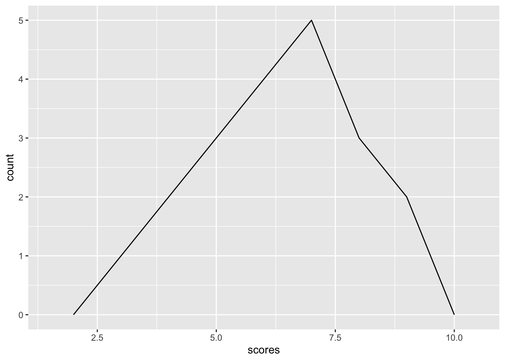

my_data <- read.csv("data/2_example.csv")Problem Set 2
Introduction to R
Part 1: Frequency tables
Instructions
Say we have some data in a .csv file. The first step is to read it into R as a data.frame object, like you practiced in the first problem set.
Make sure to take a look at the resulting data.frame. Here it’s a spreadsheet with just one column named “scores”–that’s the set of numbers I want to compute frequencies for.
There are many ways of getting producing a frequency table. There’s a built-in table() function, which takes a vector of values and returns a “table” object with the individual scores on one line, and their frequencies on the line below.
frequencies <- table(my_data$scores)
frequencies
3 4 5 6 7 8 9
1 2 3 4 5 3 2 You can compute other things you might want to compute, like the total number of scores, \(n\), and proportions.
sum(frequencies)[1] 20frequencies / sum(frequencies)
3 4 5 6 7 8 9
0.05 0.10 0.15 0.20 0.25 0.15 0.10 That’s nice enough, but a more powerful way of doing this is to use the dplyr function count() as part of an analytic pipeline using the |> pipe operator. (Remember the pipe operator takes the object on its left and ‘pipes’ it into the next function as its first argument. Many dplyr functions are designed to be used this way.)
library(dplyr)
my_data |>
count(scores) # compute frequencies for the 'scores' column scores n
1 3 1
2 4 2
3 5 3
4 6 4
5 7 5
6 8 3
7 9 2The value of doing it that way is that the count() function returns a data.frame, rather than the slightly more esoteric ‘table’ object returned by table(). And the nice thing about having the scores and frequencies as a data.frame is that we can easily add to the analytic pipeline to add other quantities we might be interested in. dplyr’s mutate() function allows you to perform computations and add columns to a data.frame.
frequency_table <- my_data |>
# count the scores to produce frequencies
count(scores) |>
# now add additional columns
mutate(proportion = n / sum(n),
percent = proportion * 100,
cumulative_percent = cumsum(percent))
frequency_table scores n proportion percent cumulative_percent
1 3 1 0.05 5 5
2 4 2 0.10 10 15
3 5 3 0.15 15 30
4 6 4 0.20 20 50
5 7 5 0.25 25 75
6 8 3 0.15 15 90
7 9 2 0.10 10 100Notice that the data.frame initially produced by count() has two columns. The first is named whatever the column that you counted was named (so here it was scores) and the second column, containing the frequencies, is named n by default. That’s why to compute the proportions, I used n / sum(n): it’s referring to the n column of values. You can change that if you like by using the name argument inside the count function to specify the name of the resulting column. Just remember to use the correct name in subsequent operations inside mutate() if you do so.
# count column will be named "n" by default
my_data |>
count(scores) scores n
1 3 1
2 4 2
3 5 3
4 6 4
5 7 5
6 8 3
7 9 2# count column will be named "frequency"
my_data |>
count(scores, name = "frequency") scores frequency
1 3 1
2 4 2
3 5 3
4 6 4
5 7 5
6 8 3
7 9 2
TipFormatting tables
You might find that your table looks unsightly in your Rendered document because the numbers have so many decimal places. Usually just one or two decimals is sufficient precision. Maybe you would like to have different column names as well.
Behind the scenes, data.frames are rendered using knitr::kable(), i.e. the kable() function from the knitr package (It’s called knitr because it “knits” the raw stuff in your editor into a lovely finished document, like turning yarn into a lovely sweater. I guess the name “kable” comes from mashing up “knitr table”. Isn’t this fun?).
So instead of just typing the name of your data.frame and letting it show up with default settings and the original column names, you can explicitly feed it into the knitr::kable() function and include the additional arguments digits and col.names. You can even use fancy-looking mathematical symbols for the column names by enclosing it within dollar signs!
knitr::kable(frequency_table,
digits = 1,
col.names = c("Score",
"$f$",
"$p$",
"%",
"cumulative %"))| Score | \(f\) | \(p\) | % | cumulative % |
|---|---|---|---|---|
| 3 | 1 | 0.0 | 5 | 5 |
| 4 | 2 | 0.1 | 10 | 15 |
| 5 | 3 | 0.1 | 15 | 30 |
| 6 | 4 | 0.2 | 20 | 50 |
| 7 | 5 | 0.2 | 25 | 75 |
| 8 | 3 | 0.1 | 15 | 90 |
| 9 | 2 | 0.1 | 10 | 100 |
Part 2: Data visualization
Instructions
As usual, there are many ways of producing data visualization in R, but the most widely used and flexible is probably the ggplot2 package. The “gg” in “ggplot” refers to the “grammar of graphics”. This package isn’t built-in to R; someone else created it and made it freely available as an add-on. For packages like that, we have to tell R we want to use them using the library() function.
library(ggplot2)For these instructions I use the same file, “2_example.csv” in the “data” folder as I did for the previous instructions. Since I already read the data in a previous code chunk, don’t necessarily need to do it again; however, maybe in your answers to the previous part you also used the name my_data, which would overwrite my my_data! I’ll read in the data again to be safe, but if you’re being careful about the names you give things you don’t need to. (but it doesn’t hurt).
my_data <- read.csv("data/2_example.csv")The following two lines create a simple bar graph. ggplot works by layering, using the + symbol. The first line specifies the name of the data.frame and the ‘aesthetics’: we want the scores (which are in a column conveniently named scores in the data.frame) on the x-axis. Then we add geom_bar() as the geometry layer. geom_bar is designed to take a set of scores and calculate the frequencies, which become the height of the bars on the \(y\)-axis (which is why we don’t need to explicitly specific a \(y\) aesthetic in the aes() function.
ggplot(my_data, aes(x = scores)) +
geom_bar()
That’s all there is to it: we now have a perfectly serviceable bar graph showing the frequency distribution.
If we instead wanted a histogram, there are a couple of ways to do it. Remember, the only visual difference between a bar graph and histogram is that a histogram has bars that are touching, while the bar graph has a bit of space between them. So we can repeat the previous code, but specify that the width of the bars should be 1.
ggplot(my_data, aes(x = scores)) +
geom_bar(width = 1)
And that basically produces what we want. But there is also a dedicated histogram geom we can use:
ggplot(my_data, aes(x = scores)) +
geom_histogram()`stat_bin()` using `bins = 30`. Pick better value with `binwidth`.
When you run those lines of code you’ll notice a warning message in the console advising you to pick a new binwidth. That’s because the default is to have 30 bins, which often won’t be appropriate for your data. Here, because sleep duration was recorded ‘to the nearest whole hour’, i.e. the data is integer, we probably want a binwidth of 1 unit, i.e. we want a bar for each hour.
ggplot(my_data, aes(x = scores)) +
geom_histogram(binwidth = 1)
Now this is identical to the geom_bar(width = 1) version from before. Note that bar’s width and the binwidth are different things, though. The width is literally the width of the bars; binwidth is the width of the intervals into which scores are grouped. The usefulness of geom_histogram()is that it allows for more flexibility with the binwidth, which can be useful for continuous scores and datasets which cover a width range of scores, for which we might want a grouped frequency histogram with a wider binwidth.
Lastly, we make a frequency polygon in much the same way as a histogram, remembering to specify the appropriate binwidth.
ggplot(my_data, aes(x = scores)) +
geom_freqpoly(binwidth = 1)
TipBonus: Making things look nice
The default options for the look of the plot are still pretty ugly though. If you’re so inclined, you can customize just about everything about the look and layout of a graph using ggplot. Some aspects are fairly straight forward, like changing the outline and fill of the bars within the geom_histogram() function. We add another layer, labs() to set the axis titles. Stating breaks within scale_x_continuous() determines the labels of the x axis. And then there are all the theme() elements we can change or remove.
ggplot(data = my_data, aes(x = scores)) +
geom_histogram(binwidth = 1, fill = "grey", color = "black") +
labs(x = "Scores", y = "Frequency") +
scale_x_continuous(breaks = 3:9) +
theme(panel.grid = element_blank(),
axis.line.x = element_line(),
axis.line.y = element_line(),
panel.background = element_rect(fill = "white"))
I don’t suggest you get into the weeds on this unless you find that kind of thing satisfying (like I do). But for psych majors it can be a useful exercise figuring out how to produce a graph formatted according to, say, APA conventions, by tweaking the theme options.
There’s a learning curve to ggplot, but once you get to grips with it, it is an incredibly powerful and flexible way of visualizing data.